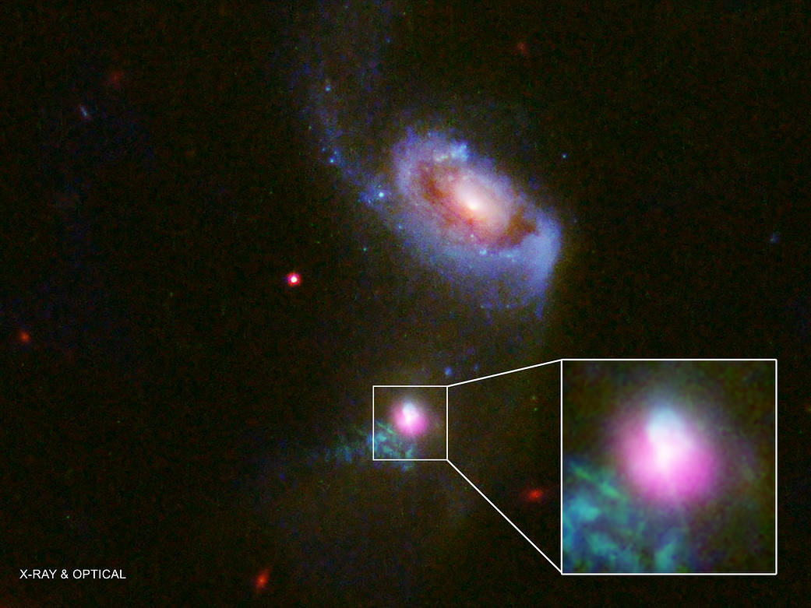

NASA
La NASA, l'agence spaciale américaine, effectue beaucoup de recherches concernant les trous noirs à l'aide de nombreux téléscopes. Le 11 janvier 2018, elle publie des images combinées par le téléscope spatial Hubble et de plusieurs téléscopes terrestres incluant l'Observatoire X-Ray de Chandra. La combinaison de ces images permet de voir un trou noir effectuant un "rot" après avoir ingurgité une grande quantité de gaz et de matière provenant de son voisinage. Le phénomène se produit quand le trou noir mange trop de matière et de gaz en une période de temps très courte.
L'image montre la galaxie appelée J1354+1327 (ou simplement J1354) et une galaxie voisine un peu plus au nord. Les rayons-X sont produits quand des gaz sont chauffés à des millions de degrés par les énormes forces gravitationnelles et magnétiques près d'un trou noir. Le trou noir en question aurait une masse plusieurs millions ou milliards de fois celle de notre propre soleil. Lorsque les gaz sont attirés vers un trou noir, une partie de ceux-ci sont dévorés alors qu'une autre partie est expulsée dans une puissante émission de particules à haute énergie.
La NASA travaille en collaboration avec plusieurs universités américaines afin d'approfondir les connaissances disponibles sur ces mystères de la nature.